火灾逃生
【九大必掌握要领】
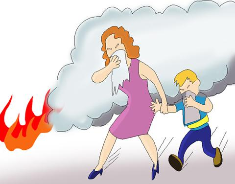
1.火灾来袭时，迅速逃生，不要贪恋财物
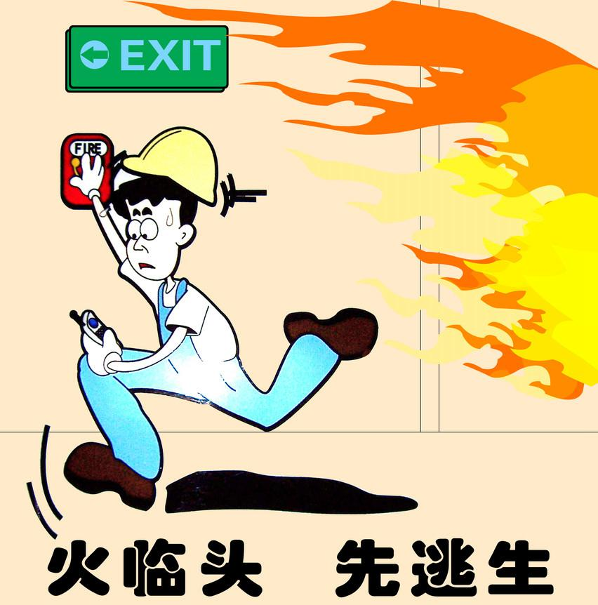
2.平时要掌握好逃生的基本方法和几条逃生路线
3.受到火势威胁时，要当机立断披上浸湿的衣物，被褥等向安全出口方向冲出去。
4.穿过浓烟逃生时，要尽量使身体贴近地面，并用湿毛巾捂住口鼻。
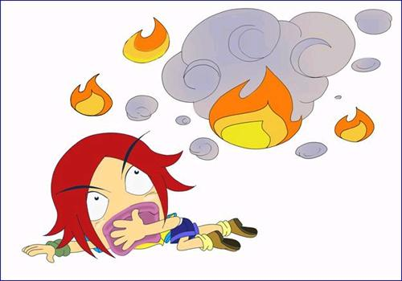
5.身上着火，千万不要奔跑，可就地打滚或用厚重的衣物压灭火苗。
6.遇火灾不可乘坐电梯，要向安全出口方向逃生。
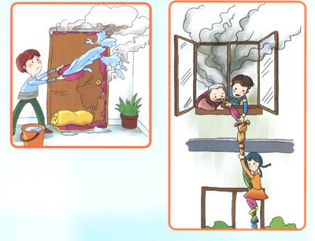
7.室外着火，门已发烫，千万不要开门，以防大火蹿入室内，要用浸湿的被褥，衣物等堵塞门窗缝，并泼水降温。
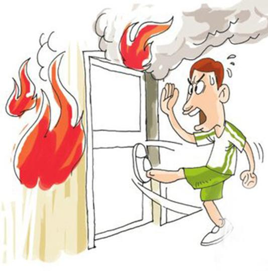
8.若所在逃生线路被大火封锁，要立即退回室内，用打手电筒，挥舞衣物，呼叫等方式向窗外发送求救信号，等待救援。
9.千万不要盲目跳楼，可利用疏散楼梯、阳台等逃生自救。也可用绳子可把床单、被套撕成条状成连成绳索，紧栓在窗框、暖气管、铁栏杆等固定物上，用毛巾、布条等保护手心顺绳滑下。
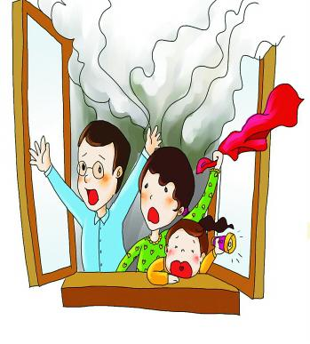
【重要场所逃生须知】
（一）高层建筑火灾逃生
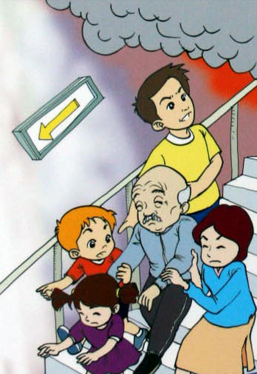
1.事先熟悉环境，暗记出口，千万 不要乘坐电梯，以免电梯停电或失控。
2.发生火灾，不要惊慌，可用灭火器或者消防拴第一时间扑灭，此时还应呼喊周围的人出来参与灭火和报警。
3.开门前用手摸门把手，不要贸然地打开房门。
4.关闭房门内所有门窗，不能盲目跳楼，要向外发出呼救的信号。
5.尽快就近跑向已知的紧急疏散出口，遇有防火门应该及时关上，如果楼道被烟气封锁或者包围的时候应该尽量降低身体尤其是头部的高度，用湿毛巾或者衣物堵住口鼻。6.当被大火困在房内无法脱身时，不能盲目从窗口往下跳，要用湿毛巾捂住鼻子，阻挡烟气侵袭，耐心等待救援，并想方设法报警呼救。
（二）集贸市场火灾
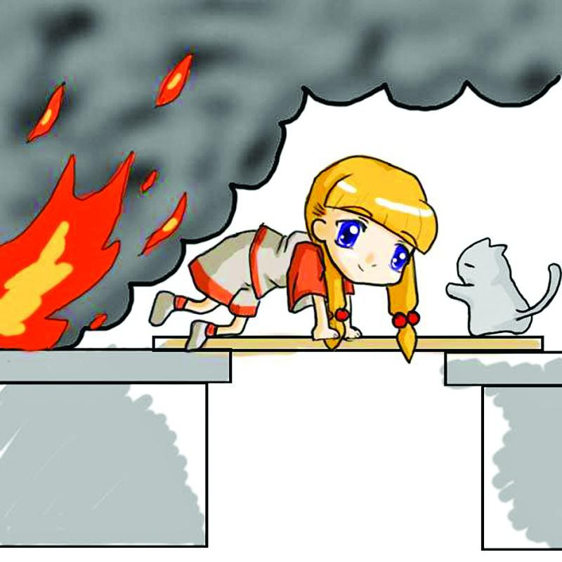
1.利用现有物资逃生：商场（集贸市场）商品种类繁多，发生火灾后，可利用逃生的物资是比较多的。如：毛巾、口罩浸湿后可制成防烟工具捂住口、鼻，绳索、布匹、床单、地毯、窗帘、各种机用皮带、消防水带、电缆线都可用来开辟逃生通道；
2.利用疏散通道逃生：每个商场都按规定设有室内楼梯、室外楼梯，有的还设有自动扶梯、消防电梯等，发生火灾后，尤其是在初期阶段，这些都是逃生的良好通道。
3.寻找避难处所，堵塞间隙：发生火灾时，如上述二种方法都无法逃生，可利用水管、房屋内外的突出部分和各种门、窗以及建筑物的避雷网（线）进行逃生，或转移到安全区域再寻找机会逃生。
（三）家庭火灾逃生
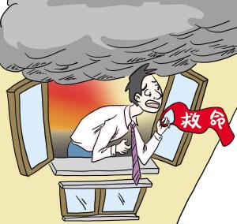
1.火灾袭来时要迅速逃生，不要贪恋财物。要切记火灾逃生中的速度极为重要。
2.要了解掌握火灾逃生的基本方法，熟悉几条逃生路线。
3.受到火势威胁时，要当机立断，披上浸湿的衣物、被褥等向安全出口方向冲去。
4.火灾发生时，尽量使身体贴近地面或匍匐前进，并用湿毛巾捂住口鼻。
5.身上着火，千万不要奔跑，可就地打滚或用厚重的衣物压住火苗。
6.遇火灾不可乘电梯，要安全出口方向逃生。
7.室外着火，门已发烫时，千万不要开门，以防大火窜入室内。要用浸湿的被褥、衣物等堵塞门窗缝，并泼水降温。
8.若所有逃生线路被大火封锁，要立即退回室内，用打手电筒、挥舞衣物、呼叫等方式向窗外发送求救信号，等待救援。
9.千万不要盲目跳楼。
（四）学校火灾逃生
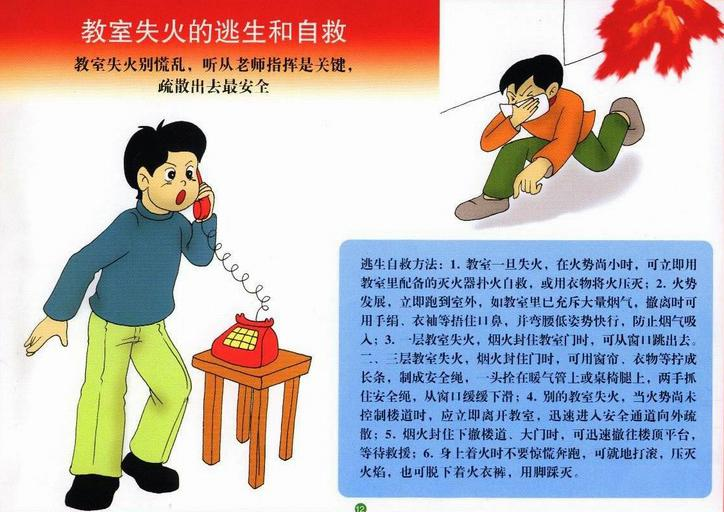
1、如果身上的衣物，由于静电的作用或吸烟不慎，引起火灾时，应迅速将衣服脱下或撕下，或就地滚翻将火压灭，但注意不要滚动太快。
2、如果寝室、教室、实验室、会堂、宾馆、饭店、食堂、浴池、超市等着火时，可采用以下方法逃生：
（1）用湿毛巾或手帕捂住嘴和鼻（但毛巾与手帕不要超过六层厚）。
（2）遮盖护身法。将浸湿的棉大衣、棉被、门帘子、毛毯、麻袋等遮盖在身上，
（3）退入一个房间内，可将门缝用毛巾、毛毯、棉被、褥子或其它织物封死，并不断往上浇水进行冷却。
（4）实在无路可逃时，可利用卫生间进行避难。
3、火场求救方法：可在窗口、阳台、阴台、房顶、屋顶或避难层处，向外大声呼叫，敲打金属物件、投掷细软物品、夜间可打手电筒、打火机等物品的声响、光亮，发出求救信号。
（五）动车火灾逃生
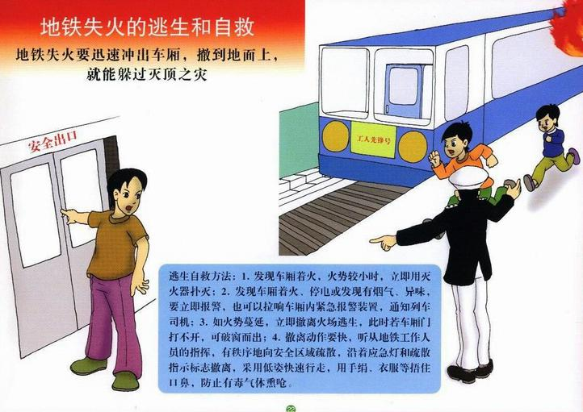
1、发生事故时，应该马上趴下来，抓住牢固的物体，以防被其他硬物击伤，最好的位置是在过道上面，方便逃离，也可以预防被车的冲击力抛动受伤。
2、发生事故的时候一定要低下头，把下巴紧贴在胸前，以防止头部受伤。
3、发生事故逃生时，用锤尖敲击车窗四个角的任意一个角近窗框位置，尤其是上方边缘最中间的地方，钢化玻璃砸中间是没有用的。
4、如果发生火灾，首先要冷静，切勿盲目跳车，否则无异于自杀。先尝试将现有明火扑灭，如果发现火势太大，应利用随身携带的手帕、餐巾纸、衣物等用品堵住口鼻、遮住裸露皮肤，用水或饮料请将手帕、餐巾纸、衣物等用品浸湿使用。必须顺列车运行方向撤离，因为在通常情况下，列车在运行中火势是向后部车厢蔓延的。